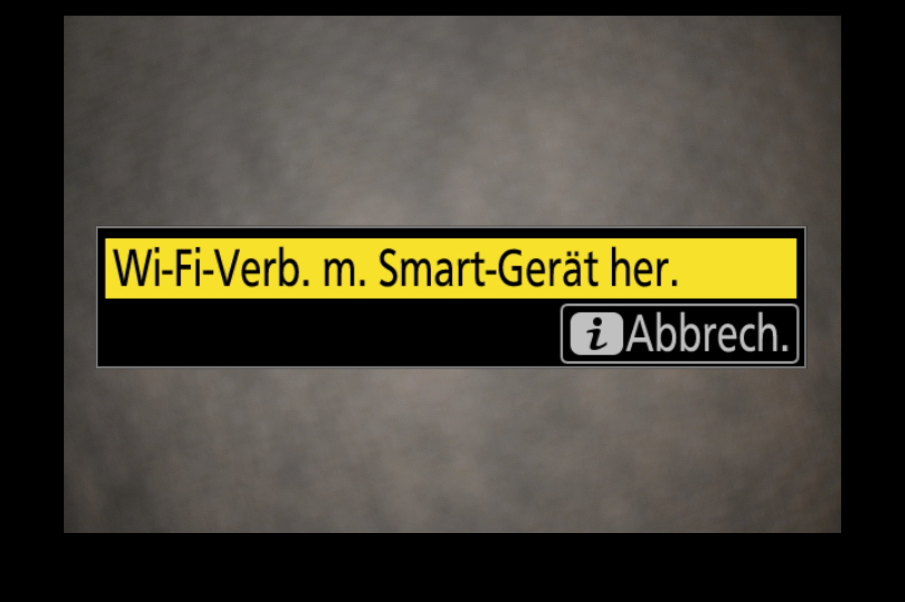

Wichtig! Dieses Handbuch bezieht sich auf
Nikon-Kameramodelle, die SnapBridge unterstüzen, einschließlich der Modelle Z6 und Z7. Wenn Sie ein
älteres Modell ohne SnapBridge-Unterstüzung verbinden möchten, folgen Sie unserem Nikon (ohne SnapBridge) Verbindungshandbuch.
Vor dem Setup
- Prüfen Sie, ob Ihre Kamera von der Cascable App unterstützt wird.
- Prüfen Sie, ob die Firmware-Version Ihrer Kamera aktuell ist.
- Prüfen Sie, ob Sie die neueste Version von Cascable installiert haben.
Kamera-Setup
- Drücken Sie die Menü-Taste Ihrer Kamera und wählen Sie Mit Smart-Gerät verbinden im
 System Menü aus.
System Menü aus.
- Wählen Sie Wi-Fi-Verbindung im Mit Smart-Gerät verbinden Menü aus, danach Wi-Fi-Verbindung herstellen. Wenn Sie die SSID und das Kennwort des von Ihrer Kamera erstellten WLAN-Netzwerks ändern möchten, wählen Sie Wi-Fi-Verbindungseinstellungen aus.


- Ihre Kamera wird Ihnen die SSID und das Kennwort des WLAN-Netzwerks anzeigen, mit dem Ihr Smart-Gerät verbunden werden soll.
- Verbinden Sie sich mit dem Netzwerk, das von Ihrer Kamera angezeigt wird in den Wi-Fi-Einstellungen Ihres Smart-Geräts.
- Starten Sie Cascable auf Ihrem Smart-Gerät. Die App wird Ihre Kamera automatisch erkennen und eine Verbindung herstellen.
Schnelle Verbindung (nach dem Kamera-Setup)
Nach Abschluss des Kamera-Setups können Sie eine Wi-Fi-Verbindung zu Ihrer Kamera herstellen, ohne erneut über die Menüeinstellungen zu gehen.
- Drücken Sie die i-Taste Ihrer Kamera und wählen Sie Wi-Fi-Verbindung aus.

- Wählen Sie Wi-Fi-Verb. m. Smart-Gerät her. aus.

- Ihre Kamera wird die SSID und das Kennwort des WLAN-Netzwerks anzeigen, mit dem Ihr Smart-Gerät verbunden werden soll.
- Verbinden Sie sich mit dem Netzwerk, das von Ihrer Kamera angezeigt wird in den Wi-Fi-Einstellungen Ihres Smart-Geräts.
- Starten Sie Cascable auf Ihrem Smart-Gerät. Die App wird Ihre Kamera automatisch erkennen und eine Verbindung herstellen.
FAQ und Kundenservice
Bei weiter bestehenden Problemen oder Fragen besuchen Sie bitte die Cascable Website. Dort finden Sie Antworten zu häufig gestellten Fragen und unsere Kontaktinformationen.